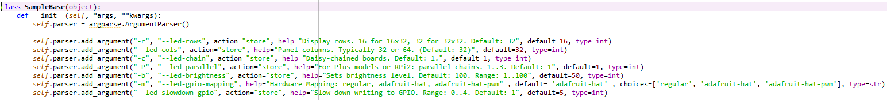
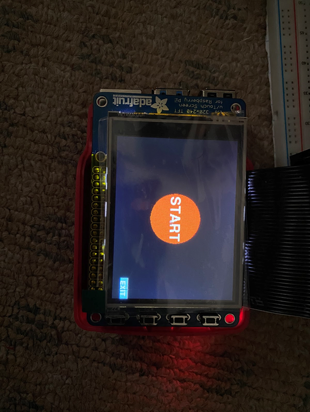

Jiaqi Sun (js3599)
Pranav Gupta (ppg22)
As internet services are increasingly becoming available to all regions of the world, we face an unprecedented task of overcoming barriers such as language, so as to provide cutting edge quality content to each person on the planet. Artificial intelligence (AI) technologies such as speech recognition, which are a key to this transformation, require a diverse training corpus such as speech recordings, which aren't widely available for many world languages. By building a simple and easy-to-use karaoke system, we can crowdsource a speech-to-text corpus that can be used to train AI models, e.g., speech recognition.
There are around 6500 languages in the world. Unfortunately, a lot of artificial intelligence technology today exists only in major languages like English, Spanish, Mandarin (Chinese), etc. A major barrier to the development of artificial intelligence technology in all the other languages is the lack of training data. However, data collection is an expensive task, and we must invent ways to continuously collect and refine training data, while minimizing the cognitive load on people contributing to training data for AI models. To this end, we propose to create a Raspberry Pi karaoke system that displays song lyrics on the piTFT screen and records speech input from users listening to the karaoke track through an earphone connected to the Pi. A PiTFT screen, a LED panel, a microphone, and an earphone are the primary components of the Karaoke System. After a user chooses a song on the GUI displayed on the piTFT, the music video is played on the piTFT and the real-time frequency spectrum of the music playback is displayed on the LED panel. The user can listen to the music from the earphone and sing to the microphone. The singing is recorded with the microphone and after the song is finished, the singing is scored based on its correlation and consistency with the playback. The voice recording would be then uploaded to the cloud along with other user and song metadata, which could be used to further train an automatic speech recognition (ASR) deep learning model on the cloud. Our goal is to create a diverse and high quality voice to text training corpus for ASR by engaging users in a fun task such as karaoke singing in languages that have musical content with the corresponding lyrics but an immature ASR technology. This helps in appealing to a broader audience, in contrast with current mechanisms such as Amazon Mechanical Turk that impose a huge cognitive load on contributors.
The LED panel we used is the Medium 16x32 RGB LED matrix panel produced by Adafruit. The panel requires 12 digital pins, 6 pins for color data and 6 pins for control, and a 5V power supply. The pins are connected directly to the GPIO pins on the RPi. Although the pins require 5V logic input, and the RPi outputs 3.3V logic, the 3.3V logic is enough to trigger. A 5V 2A charger supplies power to the LED panel through a 2.1mm to Screw Jack Adapter. We used the LED-matrix library provided by Henner Zeller on Github to help control the display of the LED. The figure shows how the pins and GPIO pins are connected based on the settings of the library. A few changes were made in the samplebase.py script in the python/samples subdirectory. The size of the matrix was changed to 16x32. There was only one panel in the chain. The brightness was changed to level 50. The LED GPIO mapping was changed to ‘adafruit-hat’, because we used Adafruit HAT default configuration for GPIO mapping. We also changed the --led-slowdown-gpio to 4 to slow down the speed of data output.
A few changes were made in the samplebase.py script in the python/samples subdirectory. The size of the matrix was changed to 16x32. There was only one panel in the chain. The brightness was changed to level 50. The LED GPIO mapping was changed to ‘adafruit-hat’, because we used Adafruit HAT default configuration for GPIO mapping. We also changed the --led-slowdown-gpio to 4 to slow down the speed of data output.
To display words on the LED panel, the function graphics.DrawText was used that displays words on the specific position of the LED with colors. The graphics.DrawLine function was used to display graphics on the LED panel. We used the two functions to display the “Karaoke” title, a tone animation, and scores on the LED. The following figures show the display of the words and graphics.
The frequency spectrum is being displayed while the music playback is being played. We used the wave module to open the audio file of the music and read 4096 frames of audio from the file. The struct.unpack function was used to unpack the data. We then used numpy.fft.rfft function to compute the discrete Fourier transform of the data, stored the output and had them ready to be displayed on the LED. To make the spectrum be displayed in real-time, we used the pyaudio module to play the audio file of the music. As the audio data was played by the pyaudio, the spectrum of the data was calculated and displayed on the LED. We used the SetPixel function of the LED-matrix library to display the spectrum. The figure shows the spectrum display.
The GUI on piTFT is achieved by the Pygame module. The pygame.event.get function detects the mouse movement. The following functions add buttons and text on the screen.
There are two levels: The start level and the Song choice level. The Start level contains a Start button at the center of the screen and an EXIT button at the right bottom of the screen. The Start button leads to the second level and the EXIT button terminates the program. The second level contains six buttons each corresponding to one song, BACK button, and EXIT button. Pressing the song buttons leads to the playback on the piTFT and the spectrum display of the song. The BACK button returns the GUI back to the first level. The figures show the first and second levels of the GUI.
The labels in blue circles on the piTFT screen are the 6 songs we curated for our Karaoke system. 3 of the 6 songs are from high resource languages, whereas the rest are from low resource languages. Here is a list of the songs:
While the purpose of our device is to collect training data for speech recognition AI models, in order to incentivize good recording practices for our users, we score user recordings based on their consistency and singing. We define consistency by the fraction of the time users are making some attempt to sing while the song is also going on. In most songs, the lyrics correspond to the high amplitude regions of the spectrum. So we can find out the consistency of the user by figuring out the fraction of the time they were singing, i.e., amplitude was above a threshold, and divide it by the fraction of the time the playback had an amplitude beyond a threshold. We scale this fraction up to a maximum of 50 points, by multiplying the fraction by 50. We also calculate the cross-correlation between the playback (reference) and the user recording (source). Due to noise this correlation cannot be expected to be perfect, even for a good singer. Therefore we set a maximum of 0.03 correlation, above which the user gets a maximum score of 50. If the correlation turns out to be below 0.03 in magnitude, then we scale down the score appropriately. Finally, the sum of the correlation score (out of 50) and the persistence score (also out of 50) is displayed on the LED panel.
All the scripts are combined in a bash script. The “Karaoke” title and the GUI are run first. After a song is chosen, the choice is written to a text file. The bash file reads the text file to find the song that is chosen, gets the mp4 and wav file of the song ready, and creates a record file for the user. The spectrum script in the meantime reads the choice from the text file and plays the playback and displays the spectrum in the background. The music video of the song is run by mplayer as well. The length of the song is calculated and the singing is only recorded for the amount of time. After the song is finished, the score is calculated and displayed on the LED.
Issue 1: Each section ran pretty well but there were problems combining them together. Both the music video and the pyaudio play audio. And the built-in audio of the Raspberry Pi was disabled as required by the LED-matrix library. To make sure that the two audio plays didn’t conflict, we used two audio adapters with one of them outputs the pyaudio audio and the other outputs the audio of the music video.
Issue 2: Because the RPi is required to control the LED panel and piTFT at the same time, some funny things happened when we ran them together. At first, we put both the pygame and the “Karaoke” title in the same script. This causes that the pygame cannot be initialized without being interrupted by the keyboard. It also influences the mplayer as well. Even though the program is terminated, the mplayer cannot be run after the program. We solved the problem by splitting the pygame and the “Karaoke” title into two different scripts.
We designed each program separately and tested the programs by running them multiple times and fixing any problem. After all the programs were designed and tested, we combined them in the same bash file and ran all the programs together, problems showed up and are described in the issue section. We ran the bash file and solved the problems.
Everything performed as planned. The pygame, LED panel, mplayer, recording, and scoring algorithm ran smoothly. For the “Karaoke” title and the pygame GUI, they are displayed after the program is started. The “Karaoke!” animation runs first, then the tone animation runs and loops back to the “Karaoke!” animation. Meanwhile, the Start button is displayed on the piTFT. Pressing the Start button leads to six song buttons. The GUI returns to the first level by pressing the BACK button and the program quits by pressing the EXIT button. Both the spectrum and the music video are displayed after one song is chosen. The microphone records the singing. A “Loading” text is displayed on the LED after the song finishes. Finally, the score is displayed on the LED after it’s calculated. The program automatically loops back to the “Karaoke”, after the score is displayed. Our team meet all the goals outlined in the description.
We achieved all the goals listed in the objectives and all the sections end up running smoothly. One major conclusion we learned is that combining two different modules in the same scripts and running them together causes something wrong with the RPi. The initialization of the pygame and mplayer are affected. Another thing we learned is that the root kills the process by force if the process takes too much memory of the RPi.
If we have more time, we could improve the GUI system of the program. We plan to add more GPIO pin buttons to the system so that we could pause and resume the music video and spectrum display. The music video can be paused and resumed by FIFO file control. The spectrum display can be paused and resumed by a callback function. The singing is recorded to a wav file first. We plan to display the spectrum of the singing if there is a way to acquire the audio sample in real-time.
js3599@cornell.edu
Design LED display (“Karaoke” title, spectrum display and score display)
Design Pygame GUI
Write combine.sh bash script
ppg22@cornell.edu
Designed scoring algorithm
Preprocessed videos into wav files so that future processing can happen
Set up arecord and mplayer for playing the karaoke video and listening to the user voice input
######################################################################
#
# File: combine.sh
#
# Authors: Jiaqi Sun (js3599)
# Pranav Gupta (ppg22)
#
# Date: 12/19/2020
#
# Brief: Combine the LED, pygame, mplayer, arecord,
# score algorithm together. Run the whole system.
#
######################################################################
run_code=$1
while [ $run_code == $1 ];do
# "Karaoke!" title and Tone animation
sudo python3 title_tone.py &
# pygame GUI
sudo python3 song_choice.py > song_choice.txt
filename="song_choice.txt"
# Read the song choice
while read line
do
echo "$line"
if [ "$line" = "0" ]; then
exit 1
fi
if [ "$line" = "1" ]; then
input_mp4file="video_1/001_ManUdhanMarathi.mp4"
video_id="001"
break
fi
if [ "$line" = "2" ]; then
input_mp4file="video_1/002_NayanGujarati.mp4"
video_id="002"
break
fi
if [ "$line" = "3" ]; then
input_mp4file="video_1/003_DespacitoSpanish.mp4"
video_id="003"
break
fi
if [ "$line" = "4" ]; then
input_mp4file="video_1/004_Twinkle.mp4"
input_mp4file_1="video/004_Twinkle.mp4"
video_id="004"
break
fi
if [ "$line" = "5" ]; then
input_mp4file="video_1/005_LaoShuMandarin.mp4"
input_mp4file_1="video/005_LaoShuMandarin.mp4"
video_id="005"
break
fi
if [ "$line" = "6" ]; then
input_mp4file="video_1/006_MorningCherokee.mp4"
video_id="006"
break
fi
done < "$filename"
# Create output wavfile
output_wavfile="Video${video_id}_$(date "+%Y.%m.%d-%H.%M.%S").wav";
rm -rf $output_wavfile
# Spectrum display
sudo python3 spectrum.py &
sleep 1.3
# Calculate the length of the music video
videolen=`ffprobe -v error -show_entries format=duration -of default=noprint_wrappers=1:nokey=1 $input_mp4file`
# Mplayer the music video
sudo SDL_VIDEODRIVER=fbcon SDL_FBDEV=/dev/fb1 mplayer -vo sdl:driver=fbcon -ao alsa:device=hw=0.0 -framedrop $input_mp4file &
# Record the singing
arecord -D plughw:0,0 -f S32_LE -d `printf "%.0f" $(echo "$videolen" | bc)` user_recordings/$output_wavfile
sleep 1
# Score algorithm
python3 grade.py $output_wavfile $input_mp4file > grade.txt &
# Display the score on the LED
sudo python3 show_grade.py
done
######################################################################
#
# File: title_tone.py
#
# Authors: Jiaqi Sun (js3599)
#
# Date: 12/19/2020
#
# Brief: Display the "Karaoke!" title and tone animation on the LED
#
######################################################################
import RPi.GPIO as GPIO
import pygame
from pygame.locals import *
import os
import time
import random
import pyaudio
import struct
import numpy as np
import wave
import math
from rgbmatrix import RGBMatrix, RGBMatrixOptions, graphics
from samplebase import SampleBase
from tone import GraphicsTest
import sys
import subprocess
import threading
from signal import alarm, signal, SIGALRM, SIGKILL
# Colors
red=graphics.Color(255,0,0)
yellow=graphics.Color(255,255,0)
orange=graphics.Color(255,165,0)
white=graphics.Color(255,255,255)
misty_rose=graphics.Color(255,228,225)
rosy_brown=graphics.Color(180,143,143)
sky_blue=graphics.Color(135,206,235)
lemon_chiffon=graphics.Color(255,250,205)
purple=graphics.Color(128,0,128)
tomato=graphics.Color(255,99,71)
coral=graphics.Color(255,127,80)
orange_red=graphics.Color(255,69,0)
dark_orange=graphics.Color(255,140,0)
gold=graphics.Color(255,215,0)
yellow_green=graphics.Color(154,205,50)
lawn_green=graphics.Color(124,252,0)
green_yellow=graphics.Color(173,255,47)
spring_green=graphics.Color(0,255,127)
aqua_marine=graphics.Color(127,255,212)
deep_sky_blue=graphics.Color(0,191,255)
corn_flower_blue=graphics.Color(100,149,237)
medium_orchid=graphics.Color(186,85,211)
dark_orchid=graphics.Color(153,50,204)
dark_violet=graphics.Color(148,0,211)
black=graphics.Color(0,0,0)
run_code=True
sample=SampleBase()
canvas = sample.process()
offscreen_canvas=canvas.CreateFrameCanvas()
font=graphics.Font()
font.LoadFont("../../../fonts/4x6.bdf")
title_text="Karaoke!"
staff_y=[3,6,9,12]
k=1
# Read the song choice
file="song_choice.txt"
inputedFile=open(file,"r")
pos=inputedFile.tell()
while run_code:
grade=inputedFile.readline()
newpos=inputedFile.tell()
if newpos==pos:
inputedFile.close()
inputedFile=open(file,"r")
else:
pos=newpos
try:
if int(grade)>=0:
run_code=False
break
except:
# "Karaoke!" title
if k<=9:
len=graphics.DrawText(offscreen_canvas,font,1,5,yellow,title_text)
offscreen_canvas=canvas.SwapOnVSync(offscreen_canvas)
time.sleep(0.05)
elif k>10 and k<=19:
len=graphics.DrawText(offscreen_canvas,font,1,10,orange,title_text)
offscreen_canvas=canvas.SwapOnVSync(offscreen_canvas)
time.sleep(0.05)
elif k>20 and k<=29:
len=graphics.DrawText(offscreen_canvas,font,1,15,red,title_text)
offscreen_canvas=canvas.SwapOnVSync(offscreen_canvas)
time.sleep(0.05)
elif k>30 and k<=39:
len=graphics.DrawText(offscreen_canvas,font,1,5,yellow,title_text)
offscreen_canvas=canvas.SwapOnVSync(offscreen_canvas)
time.sleep(0.05)
elif k>40 and k<=49:
len=graphics.DrawText(offscreen_canvas,font,1,5,yellow,title_text)
len=graphics.DrawText(offscreen_canvas,font,1,10,orange,title_text)
offscreen_canvas=canvas.SwapOnVSync(offscreen_canvas)
time.sleep(0.05)
elif k>50 and k<=59:
len=graphics.DrawText(offscreen_canvas,font,1,5,yellow,title_text)
len=graphics.DrawText(offscreen_canvas,font,1,10,orange,title_text)
len=graphics.DrawText(offscreen_canvas,font,1,15,red,title_text)
offscreen_canvas=canvas.SwapOnVSync(offscreen_canvas)
time.sleep(0.05)
if k==10 or k==20 or k==30 or k==40 or k==50 or k==60:
offscreen_canvas.Clear()
canvas.Clear()
if k==60:
time.sleep(0.2)
#tone animation
if k>60 and k <=79:
for j in staff_y:
for i in range(0,32):
canvas.SetPixel(i,j,128,0,128)
h=random.randint(2,4)
graphics.DrawLine(canvas,5,h,5,h+7,misty_rose)
graphics.DrawLine(canvas,4,h+6,4,h+8,misty_rose)
graphics.DrawLine(canvas,3,h+7,3,h+8,misty_rose)
h=random.randint(2,4)
graphics.DrawLine(canvas,10,h,10,h+7,sky_blue)
graphics.DrawLine(canvas,9,h+6,9,h+8,sky_blue)
graphics.DrawLine(canvas,8,h+7,8,h+8,sky_blue)
graphics.DrawLine(canvas,10,h,16,h,sky_blue)
graphics.DrawLine(canvas,10,h+2,16,h+2,sky_blue)
graphics.DrawLine(canvas,16,h,16,h+7,sky_blue)
graphics.DrawLine(canvas,15,h+6,15,h+8,sky_blue)
graphics.DrawLine(canvas,14,h+7,14,h+8,sky_blue)
h=random.randint(5,7)
graphics.DrawLine(canvas,22,h,22,h+1,rosy_brown)
graphics.DrawLine(canvas,21,h,21,h+2,rosy_brown)
graphics.DrawLine(canvas,20,h+1,20,h+2,rosy_brown)
h=random.randint(2,4)
graphics.DrawLine(canvas,27,h,27,h+7,lemon_chiffon)
graphics.DrawLine(canvas,26,h+6,26,h+8,lemon_chiffon)
graphics.DrawLine(canvas,25,h+7,25,h+8,lemon_chiffon)
graphics.DrawLine(canvas,27,h,29,h+2,lemon_chiffon)
graphics.DrawLine(canvas,29,h+2,29,h+3,lemon_chiffon)
time.sleep(0.2)
canvas.Clear()
k+=1
if k>79:
k=1
sys.exit(0)
######################################################################
#
# File: song_choice.py
#
# Authors: Jiaqi Sun (js3599)
#
# Date: 12/19/2020
#
# Brief: Pygame GUI of the program
#
######################################################################
import RPi.GPIO as GPIO
import pygame
from pygame.locals import *
import os
import time
import random
import pyaudio
import struct
import numpy as np
import wave
import math
from rgbmatrix import RGBMatrix, RGBMatrixOptions, graphics
from samplebase import SampleBase
from tone import GraphicsTest
import sys
import subprocess
import threading
from signal import alarm, signal, SIGALRM, SIGKILL
# Pygame initialization
os.environ['SDL_VIDEODRIVE']='fbcon'
os.environ['SDL_FBDEV']='/dev/fb1'
os.environ['SDL_MOUSEDRV']='TSLIB'
os.environ['SDL_MOUSEDEV']='/dev/input/touchscreen'
pygame.init()
screen = pygame.display.set_mode((320, 240))
pygame.mouse.set_visible(False)
# Colors
red_= 255,0,0
yellow_= 255,255,0
orange_= 255,165,0
white_= 255,255,255
misty_rose_= 255,228,225
rosy_brown_= 180,143,143
sky_blue_= 135,206,235
lemon_chiffon_= 255,250,205
purple_= 128,0,128
tomato_= 255,99,71
coral_= 255,127,80
orange_red_= 255,69,0
dark_orange__= 255,140,0
gold__= 255,215,0
yellow_green_= 154,205,50
lawn_green_= 124,252,0
green_yellow_= 173,255,47
spring_green_= 0,255,127
aqua_marine_= 127,255,212
deep_sky_blue_= 0,191,255
corn_flower_blue_= 100,149,237
medium_orchid_= 186,85,211
dark_orchid_= 153,50,204
dark_violet_= 148,0,211
black_= 0,0,0
# Font, button design
my_font=pygame.font.Font(None,20)
my_title_font=pygame.font.Font(None,40)
start_button={'START':(160,120)}
song_button={'Morning':(80,40),'LaoShu':(80,120),'Twinkle':(80,200),'Despacito':(220,40),'Nayan':(220,120),'ManUdhan':(220,200)}
back_button={'BACK':(20,220)}
exit_button={'EXIT':(300,220)}
screen.fill(black_)
run_code=True
play_song=-1
level=1
while run_code:
for event in pygame.event.get():
# Detect the mouse
if event.type is MOUSEBUTTONUP:
x,y=pygame.mouse.get_pos()
if level==1:
if x<=220 and x>=140 and y<=180 and y>=80:
level=2
if x<=3000 and x>=280 and y<=220 and y>=200:
run_code=False
play_song=0
elif level==2:
if x>=60 and x<=100:
if y>=20 and y<=60:
play_song=6
elif y>=100 and y<=140:
play_song=5
elif y>=180 and y<=220:
play_song=4
elif x>=200 and x<=240:
if y>=20 and y<=60:
play_song=3
elif y>=100 and y<=140:
play_song=2
elif y>=180 and y<=220:
play_song=1
elif x<=300 and x>=280 and y<=220 and y>=200:
run_code=False
play_song=0
elif x<=40 and x>=0 and y<=220 and y>=200:
level=1
screen.fill(black_)
# Design buttons
if level==1:
for my_text,text_pos in start_button.items():
text_surface=my_title_font.render(my_text,True,white_)
rect = text_surface.get_rect(center=text_pos)
pygame.draw.circle(screen,orange_red_,(160,120),50)
screen.blit(text_surface,rect)
for my_text,text_pos in exit_button.items():
text_surface=my_font.render(my_text,True,white_)
rect = text_surface.get_rect(center=text_pos)
pygame.draw.rect(screen,sky_blue_,(280,210,40,15),0)
screen.blit(text_surface,rect)
elif level==2:
for my_text,text_pos in song_button.items():
x,y=text_pos
text_surface=my_font.render(my_text,True,white_)
rect = text_surface.get_rect(center=text_pos)
pygame.draw.circle(screen,dark_orchid_,(x,y),32)
screen.blit(text_surface,rect)
for my_text,text_pos in exit_button.items():
text_surface=my_font.render(my_text,True,white_)
rect = text_surface.get_rect(center=text_pos)
pygame.draw.rect(screen,(x,y,(x+y)%255),(280,210,40,15),0)
screen.blit(text_surface,rect)
for my_text,text_pos in exit_button.items():
text_surface=my_font.render(my_text,True,white_)
rect = text_surface.get_rect(center=text_pos)
pygame.draw.rect(screen,lawn_green_,(0,210,40,15),0)
screen.blit(text_surface,rect)
pygame.display.flip()
if play_song!=-1:
run_code=False
print(play_song)
play_song=-1
os.environ.clear()
pygame.quit()
exit()
######################################################################
#
# File: spectrum.py
#
# Authors: Jiaqi Sun (js3599)
#
# Date: 12/19/2020
#
# Brief: Calculate and display spectrum on the LED
#
######################################################################
import pyaudio
import struct
import numpy as np
import wave
import math
import time
import RPi.GPIO as GPIO
import subprocess
from rgbmatrix import RGBMatrix, RGBMatrixOptions, graphics
from samplebase import SampleBase
from tone import GraphicsTest
import sys
import random
import os
sys.path.append(".")
CHUNK = 1024 * 4
FORMAT =pyaudio.paInt16
CHANNELS = 2
RATE =44100
OUTPUT_DEVICE=1
matrix=[0]*32
power=[]
file="song_choice.txt"
inputedFile=open(file,"r")
while True:
try:
song_number=int(inputedFile.readline())
break
except:
continue
if song_number==1: songfile='video/001_ManUdhanMarathi.wav'
elif song_number==2: songfile='video/002_NayanGujarati.wav'
elif song_number==3: songfile='video/003_DespacitoSpanish.wav'
elif song_number==4: songfile='video/004_Twinkle.wav'
elif song_number==5: songfile='video/005_LaoShuMandarin.wav'
elif song_number==6: songfile='video/006_MorningCherokee.wav'
# Spectrum calculation
def calculate_levels(data, chunk, sample_rate):
data = np.array(data,dtype='h')
fourier = np.fft.rfft(data)
fourier = np.delete(fourier,len(fourier)-1)
try:
power = np.log10(np.abs(fourier))**2
except:
power=[0]*len(fourier)
power = np.reshape(power,(32,int(CHUNK/16)))
print(power)
matrix = np.int_((np.average(power,axis=1)-10))
print(matrix)
return matrix
wf=wave.open(songfile,'rb')
# Pyaudio initialize
p = pyaudio.PyAudio()
stream = p.open(
format =FORMAT,
channels=CHANNELS,
rate=RATE,
output_device_index=OUTPUT_DEVICE,
input=False,
output=True,
frames_per_buffer=CHUNK
)
data =wf.readframes(CHUNK)
fmt="%ds" %len(data)
print(len(data))
data_int=struct.unpack(str(4*CHUNK)+'B',data)
sample=SampleBase()
canvas = sample.process()
#Main function, play music and display spectrum
stream.start_stream()
while data != '':
stream.write(data)
data = wf.readframes(CHUNK)
fmt="%ds" %len(data)
print(len(data))
if len(data)!=4*CHUNK: break
data_int=struct.unpack(str(4*CHUNK)+'B',data)
matrix=calculate_levels(data_int,CHUNK,RATE)
canvas.Clear()
for y in range(0,32):
if matrix[y]>16:
matrix[y]=16
c1=random.randint(0,255)
c2=random.randint(0,255)
c3=random.randint(0,255)
for x in range(matrix[y]):
x*=3
canvas.SetPixel(y,15-x,c1,c2,c3)
canvas.SetPixel(y,16-x,c1,c2,c3)
canvas.SetPixel(y,17-x,c1,c2,c3)
inputedFile.close()
inputedFile=open(file,"w")
inputedFile.truncate()
inputedFile.close()
stream.stop_stream()
stream.close()
p.terminate()
wf.close()
sys.exit(0)
######################################################################
#
# File: show_grade.py
#
# Authors: Jiaqi Sun (js3599)
#
# Date: 12/19/2020
#
# Brief: Display scores after they are calculated
#
######################################################################
import pyaudio
import struct
import numpy as np
import wave
import math
import time
import RPi.GPIO as GPIO
import subprocess
from rgbmatrix import RGBMatrix, RGBMatrixOptions, graphics
from samplebase import SampleBase
from tone import GraphicsTest
import sys
import random
import os
#Colors
red=graphics.Color(255,0,0)
yellow=graphics.Color(255,255,0)
orange=graphics.Color(255,165,0)
white=graphics.Color(255,255,255)
misty_rose=graphics.Color(255,228,225)
rosy_brown=graphics.Color(180,143,143)
sky_blue=graphics.Color(135,206,235)
lemon_chiffon=graphics.Color(255,250,205)
purple=graphics.Color(128,0,128)
tomato=graphics.Color(255,99,71)
coral=graphics.Color(255,127,80)
orange_red=graphics.Color(255,69,0)
dark_orange=graphics.Color(255,140,0)
gold=graphics.Color(255,215,0)
yellow_green=graphics.Color(154,205,50)
lawn_green=graphics.Color(124,252,0)
green_yellow=graphics.Color(173,255,47)
spring_green=graphics.Color(0,255,127)
aqua_marine=graphics.Color(127,255,212)
deep_sky_blue=graphics.Color(0,191,255)
corn_flower_blue=graphics.Color(100,149,237)
medium_orchid=graphics.Color(186,85,211)
dark_orchid=graphics.Color(153,50,204)
dark_violet=graphics.Color(148,0,211)
black=graphics.Color(0,0,0)
start_time=time.time()
# Read score
file="grade.txt"
inputedFile=open(file,"r")
pos=inputedFile.tell()
sample=SampleBase()
canvas = sample.process()
offscreen_canvas=canvas.CreateFrameCanvas()
font=graphics.Font()
font.LoadFont("../../../fonts/6x10.bdf")
score_title1="Score"
score_title2="IS"
bye="BYE"
load_text="Loading"
while True:
if time.time()-start_time>60:
break
try:
grade=inputedFile.readline()
newpos=inputedFile.tell()
if newpos==pos:
inputedFile.close()
inputedFile=open(file,"r")
else:
pos=newpos
# Display score and comment
score_text=str(int(grade))
font.LoadFont("../../../fonts/6x10.bdf")
len=graphics.DrawText(offscreen_canvas,font,2,10,gold,score_title1)
offscreen_canvas=canvas.SwapOnVSync(offscreen_canvas)
time.sleep(1)
offscreen_canvas.Clear()
font.LoadFont("../../../fonts/7x13.bdf")
len=graphics.DrawText(offscreen_canvas,font,10,12,white,score_title2)
offscreen_canvas=canvas.SwapOnVSync(offscreen_canvas)
time.sleep(1)
offscreen_canvas.Clear()
font.LoadFont("../../../fonts/9x15.bdf")
len=graphics.DrawText(offscreen_canvas,font,8,12,sky_blue,score_text)
offscreen_canvas=canvas.SwapOnVSync(offscreen_canvas)
time.sleep(1.5)
offscreen_canvas.Clear()
if int(score_text)>60:
score_comment="Good Job"
else:
score_comment="Nice Try"
font.LoadFont("../../../fonts/4x6.bdf")
len=graphics.DrawText(offscreen_canvas,font,1,10,dark_violet,score_comment)
offscreen_canvas=canvas.SwapOnVSync(offscreen_canvas)
time.sleep(1)
offscreen_canvas.Clear()
font.LoadFont("../../../fonts/7x13.bdf")
len=graphics.DrawText(offscreen_canvas,font,6,12,lawn_green,bye)
offscreen_canvas=canvas.SwapOnVSync(offscreen_canvas)
time.sleep(1)
offscreen_canvas.Clear()
break
except:
# Display "Loading"
font.LoadFont("../../../fonts/4x6.bdf")
len=graphics.DrawText(offscreen_canvas,font,0,10,lemon_chiffon,load_text)
offscreen_canvas=canvas.SwapOnVSync(offscreen_canvas)
time.sleep(1.5)
graphics.DrawLine(canvas,27,10,27,10,lemon_chiffon)
time.sleep(0.2)
graphics.DrawLine(canvas,29,10,29,10,lemon_chiffon)
time.sleep(0.2)
graphics.DrawLine(canvas,31,10,31,10,lemon_chiffon)
time.sleep(0.2)
offscreen_canvas.Clear()
inputedFile.close()
inputedFile=open(file,"w")
inputedFile.truncate()
######################################################################
#
# File: grade.py
#
# Authors: Pranav Gupta (ppg22)
#
# Date: 12/19/2020
#
# Brief: Calculate the score of the singing based on coreelation
# consistensy.
#
######################################################################
import sys, re
import soundfile as sf
import pandas as pd
import numpy as np
#src_file: user recording
#ref_file: video from the user
#to run the program, type "python3 score.py $output_wavfile $input_mp4file" on the command line or in the Shell script
#min 3 arguments needed
if len(sys.argv) < 3:
sys.exit()
#if >=3 arguments, great! Read the src_file (arg1) and ref_file (arg2)
else:
src_file = 'user_recordings/' + sys.argv[1]
ref_file = re.sub('\.mp4', '.wav', sys.argv[2])
#print the file names, before starting the scoring process
print('Input file: ',src_file,' Output File: ', ref_file)
#read the source and reference files
data_src, samplerate_src = sf.read(src_file)
data_ref, samplerate_ref = sf.read(ref_file)
#choose the first channel from the reference audio, discard the rest
data_ref = data_ref[:,0]
#define pandas dataframes with the appropriate time index
data_ref_df = pd.DataFrame({'ref':data_ref}, index = np.arange(len(data_ref)) / samplerate_ref)
data_src_df = pd.DataFrame({'src':data_src}, index = np.arange(len(data_src)) / samplerate_src)
#"outer" join the 2 data frames and then interpolate to fill in the gaps
#df = data_ref_df.join(data_src_df, how='outer').apply(pd.Series.interpolate)
df=data_ref_df.iloc[0::10,:].join(data_src_df,how='outer').apply(pd.Series.interpolate)
#find the max run times of each video, take the minimum
#we calculate the score based on the minimum of the song time and the user's recording duration
#nominally these times should be the same
run_time = min(max(data_ref_df.index), max(data_src_df.index))
df = df.loc[df.index <= run_time]
#correlation score
correlation = 50 * min(np.abs(df.corr().iloc[0,1]), 0.03) / 0.03
#persistence score
persistence = 50 * df.loc[np.abs(df['src']) > 0.1 * np.max(np.abs(df['src']))].shape[0] / \
df.loc[np.abs(df['ref']) > 0.1 * np.max(np.abs(df['ref']))].shape[0]
#sum the 2 scores (total is out of 100)
score = int(round(correlation + persistence))
print(score)